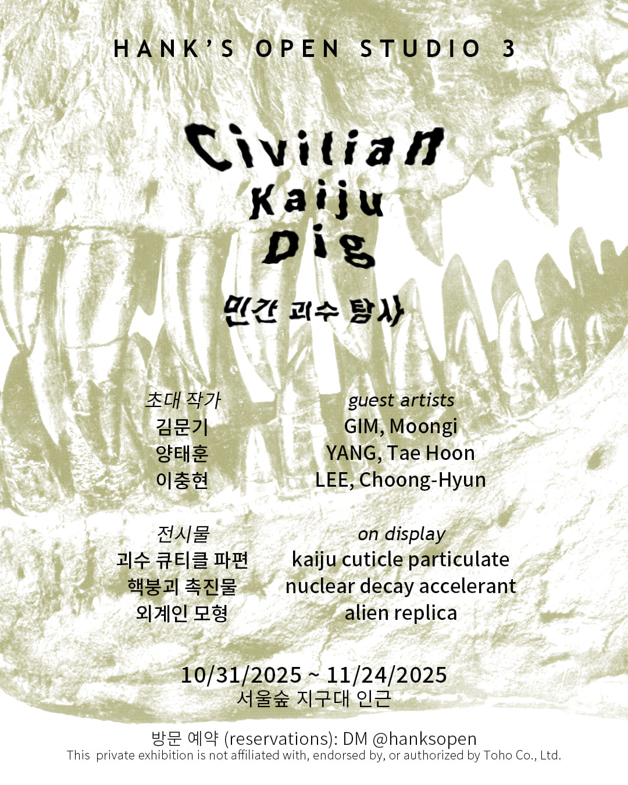

artist-run space in Seoul, ROK

참여작가
김문기 @moongigim
양태훈 @taehoonyangah
이충현 @ipbangche
괴수물이 한국에서 받는 관심은 대체로 저조하다. 특촬 괴수물의 원류인 고지라 시리즈는 특히 그러하며, 짐작건대 생산지인 2차대전 이후의 일본과 제국주의 일본의 식민지였던 한국 간의 관계엔 여전히 원한이 잔류해 있는 탓일지도 모르겠다. 보편적으로 고지라는 일본을 상대로 자행된 핵무기 공격의 은유로 해석되며, 아마 고지라는 일본을 가해자로 여기는 이에게 마음을 복잡하게 만드는, 피해자로서의 일본을 호소하는 존재일 것이다. 근 십여 년 동안 이루어진 할리우드와의 거래와 도호(東宝)사 자체 제작물의 흥행 및 호평은 고지라를 단순히 아동을 겨냥하여 양산된 엉성한 오락물로서의 위상을 뛰어넘는 존재로서 재인식시킨 듯하다. 이는 전후 일본의 뒤틀린 흉터와 자가 치유 과정, 대미 관계, 문화적 재산, 아동용 장난감, 고대 신화, 인공재해 및 자연재해, 특촬물 등을 아우른다.
하지만 혹자는 재정립되는 고지라의 문화적 입지를 보면서도 "쇼와시대" 특유의 분위기와 미술 질감을 선호한다. 압도적 크기의 연출, 공상과학, 그리고 당혹스러운 외계인의 모습은 유년기에 "쇼와" 고지라 시리즈를 접했던 사람이 갖는 향수의 핵심 요소로, (민간 괴수 탐사)에서 소환된다.
Hank's Open Studio는 일정 기간 허구적 "민간 괴수 연구소"가 되어 불특정 괴수의 각질 파편, 방사성 붕괴 촉진 기술, 그리고 외계인 신체 구조를 연구하며 그 결과를 공개한다. 방문객은 세 명의 참여 작가들이 제공한 작품을 보며 기획자와 함께 괴수물의 DNA와 한국에서의 가능성을 탐색해 보는 동시에 눈앞에 놓인 작품들의 실재에 다가서게 될 것이다. 한편 각 작품은 기존의 의미망에서 벗어난 엉뚱한 맥락 속에 이식되는 놀이를 통해 훼손되기보다는 오히려 자율성을 드러내며 확장하는 관계망을 흡수한다.
The reception of kaiju media in Korea is usually lukewarm. This is especially true for the foundational tokusatsu kaiju films, the Godzilla series, perhaps due to lingering resentment between its producer, post-WWII Japan, and the former colony of imperialist Japan, Korea. Generally, Godzilla is read as a metaphor for the nuclear attacks perpetrated against Japan; Godzilla likely represents the pathos of Japan as victimized, complicating the hearts of those who consider Japan as victimizer. The Hollywood transactions and the financial and critical success of Toho's own productions over the last decade seems to have led to a rediscovery of Godzilla as an entity that transcends its status as crude amusement churned out for children. This encompasses the twisted scars and self-healing process of postwar Japan, US-Japan relations, cultural property, children's toys, ancient mythology, disasters both man-made and natural, tokusatsu, etc.
However, in the face of Godzilla's reestablished cultural standing, some prefer the atmosphere and artistic texture of the "Showa era". The staging of overwhelming size, science fiction, and the perplexing appearance of aliens are core elements of the nostalgia felt by those who encountered the Showa Godzilla series in their youth, which are recalled in Civilian Kaiju Dig.
Hank's Open Studio will be a fictional "civilian kaiju lab" for a fixed period, studying a cuticle particulate from an unspecified kaiju, nuclear decay acceleration technology, alien body plans, and sharing its findings. Visitors will observe artworks provided by three guest artists with the curator, exploring the DNA of kaiju media and its potential in Korea while considering the reality of the artworks in front of them. The artworks themselves, released from their existing networks of meaning and playfully implanted into a wayward context, are not defaced, but rather reveal their autonomy, absorbing an expanding network of relations.